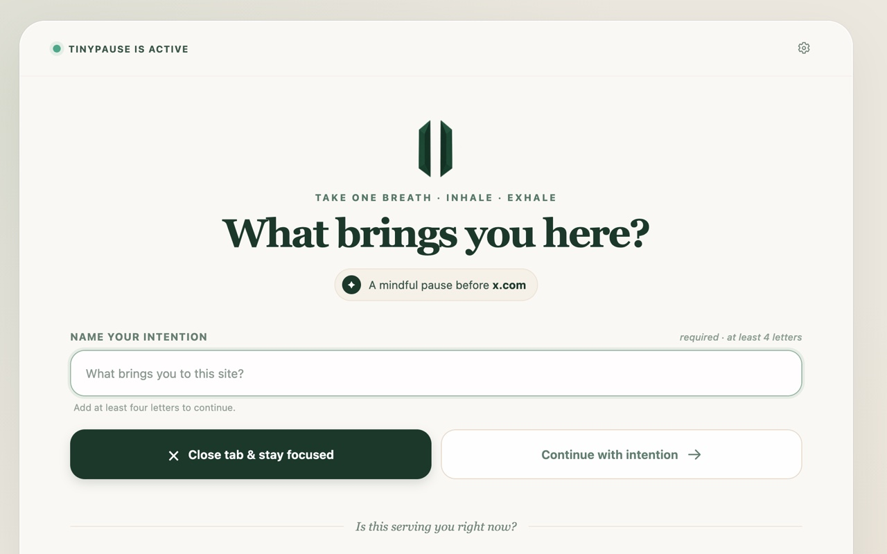

Break the loop of mindless doomscrolling.
TinyPause intercepts automatic website visits with a serene, intentional pause. Take one conscious breath, state your purpose in 4+ letters, and stay in control—powered 100% locally with zero telemetry tracking.
Serene intention, not frustrating blockers.
TinyPause doesn't punish you with harsh red error walls. It gives you space to pause, breathe, and consciously decide.

Behavioral Psychology
Why hard blockers fail, and why TinyPause works.
Hard website blockers treat you like a child. When willpower dips, you simply disable the blocker. TinyPause builds intrinsic self-regulation through mindful friction.
| Feature & Philosophy | Traditional Hard Blockers | TinyPause Extension |
|---|---|---|
| Interception Strategy | Hard lockout & harsh warning screens | Gentle breathing pause & intention check |
| User Psychology | Depletes willpower; induces bypass reflex | Activates prefrontal cortex; breaks autopilot |
| Data Privacy | Cloud servers, tracking analytics, accounts | 100% On-device storage. Zero telemetry |
| Time Accounting | Counts background idle tabs indefinitely | Foreground focused window tracking only |
| Pricing Model | Recurring monthly subscriptions | 100% Free personal use on Chrome & Firefox |
How It Works
Mindful ArchitectureNavigate to Monitored Sites
When muscle memory urges you to click Twitter, Reddit, or your customized list of distracting domains, TinyPause immediately intercepts the navigation.
Take One Conscious Breath
A serene pause screen greets you with an expanding breathing circle. You take a moment to breathe and enter an intention of at least 4 letters.
Choose Deliberately
Proceed with your stated intention, or click "Close Tab" to walk away. If you proceed, foreground browsing duration is measured precisely on your machine.
Key Capabilities
Built for HumansThe Intention Gate
Requires typing at least 4 letters explaining why you are visiting. This micro-moment of typing engages your conscious brain and breaks automatic doomscrolling.
Foreground-Only Duration Tracking
Time only counts while the monitored tab is actively in the focused window. Leaving a tab open in the background will never inflate your active time statistics.
100% Local Browser Storage
Your site list, recorded intentions, and browsing metrics stay on your machine inside storage.local. Zero servers, zero telemetry.
One-Click Tab Eject
Realized you only opened the site out of habit? The prominent "Close Tab" button instantly dismisses the tab before you get hooked by the feed.
Live Interactive Demo
Experience the pause right now.
Simulate what happens when you attempt to visit a monitored site. Feel the difference conscious friction makes.
What brings you to x.com?
State your purpose before continuing, or close this tab and return to focus.
Frequently Asked Questions
How is TinyPause different from traditional site blockers? +
Traditional site blockers lock you out completely, which often leads to frustration, willpower depletion, and disabling the extension. TinyPause does not ban sites; it introduces mindful friction. By forcing a breath and an intention, you decide whether your visit is purposeful or mindless habit.
Does TinyPause track or transmit my browsing data? +
Never. TinyPause does not communicate with any external backend servers. Your list of monitored domains, typed intentions, and session timestamps are stored solely in your browser's local extension storage. You can clear this history anytime in the settings.
Which browsers are supported? +
TinyPause is built natively on Manifest V3 and officially supports Google Chrome 120+, Mozilla Firefox 115+, Brave, Arc, Edge, and other Chromium-based browsers.
Can I add custom domains to monitor? +
Yes. Through the Settings page, you can add any website you find yourself browsing compulsively—whether it's news sites, shopping portals, video platforms, or forums.
Ready to reclaim your time & attention?
Install TinyPause free on your favorite browser in seconds. No credit card, no email signup, zero data tracking.
Manifest V3 Certified • 100% Privacy Compliant • No In-App Purchases